ETF 和基金差在哪？從買賣、費用到透明度一次搞懂該選哪個
2026-10-28
ETF 和基金常被混在一起講，其實差很多。這篇用買賣方式、主動被動、費用、透明度四個面向把兩者講清楚，並點出對長期投資人來說，為什麼低成本的被動 ETF 通常是更務實的核心選擇。
K 線反轉訊號有哪些？15 種常見型態圖解與實戰心法
2026-10-26
鎚子、吞噬、晨星、烏雲罩頂…這些 K 線反轉型態到底怎麼看？這篇把底部與頂部反轉型態分類整理，用白話解釋每種長相與意義，並點出三個比記型態更重要的實戰原則：看位置、等確認、別當聖杯。
有一筆錢（例如 80 萬）該怎麼配置？從風險屬性到股債比的實戰拆解
2026-10-26
手上有一筆閒錢，該怎麼分配到股票、ETF、債券與現金？這篇用 80 萬當例子，從「這筆錢多久要用」「跌多少會睡不著」兩個問題出發，一步步拆出緊急金、股債比與具體標的，給你一套可照著想的配置框架。
長期投資該怎麼挑好股票？從選股、評估到進場的完整方法
2026-10-24
上一篇說長期致勝靠「選股」而非進出技巧，那到底怎麼選？這篇用五個面向拆解怎麼挑會長期成長的個股、怎麼評一檔 ETF 的體質，再用真實數據回答兩個關鍵抉擇：單押個股還是買 ETF、一次投入還是定期定額。
中長期策略可以每個月賺 60000 元嗎？我用回測算給你看
2026-10-24
當沖每天賺 3000 很難，那改用中長期策略、月賺 6 萬可行嗎？我用多檔台股的真實回測，算出需要多少本金，並揭開一個反直覺真相：技術指標進出常常大幅輸給單純買進長抱。

當沖每天賺 3000 元有多難？我用回測數據算給你看
2026-10-23
當沖每天賺 3000 元聽起來不多，實際上有多難？我寫了一套日內回測系統，用七套策略、數十檔股票的真實 5 分 K 數據，拆解手續費、事後最佳的陷阱，以及為什麼穩定獲利這麼難。
不露臉也能做教學影片：AI 配音＋螢幕錄影的完整製作流程
2026-10-15
想做技術教學 YouTube 卻不想露臉、不想開麥？這篇分享一套可落地的製作流程：用 AI 配音念旁白、螢幕錄影示範操作、Canva 做概念圖卡，再用免費工具剪輯上字幕，Mac 錄螢幕、Windows 剪輯也能順暢分工。
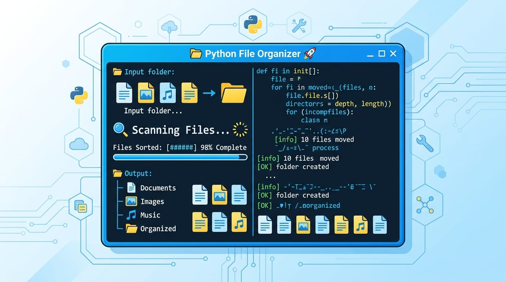
【Python 教學】實戰專案：做一個檔案整理小工具
2026-10-13
學了這麼多，這篇把全部串起來：用 Python 做一個能自動整理資料夾的命令列小工具，實際體會語法、函式、資料結構、檔案操作怎麼協作成一個真正能用的程式。
【Python 教學】資料處理入門：用 pandas 讀 CSV、篩選、統計
2026-10-13
Python 在資料分析界是王者。這篇帶你入門 pandas：讀取 CSV、檢視與篩選資料、做基本統計，還有畫出簡單圖表，體會用程式處理資料的威力。
【Python 教學】自動化腳本：把重複的工作交給程式
2026-10-13
每天重複做的瑣事，用 Python 自動化。這篇帶你用 Python 批次處理檔案、整理資料夾、做簡單的定時任務，體會「寫一次、省一輩子」的自動化威力。
【Python 教學】網路爬蟲入門：用 requests + BeautifulSoup 抓網頁資料
2026-10-13
Python 最受歡迎的應用之一就是爬蟲。這篇帶你用 requests 抓網頁、用 BeautifulSoup 解析內容，從零學會自動抓取網頁資料，並說明禮貌爬取與法律界線。
【Python 教學】檔案讀寫與 JSON：讓程式能存資料、讀資料
2026-10-13
程式關掉資料就不見？這篇帶你用 Python 做檔案讀寫（open、with），並用內建 json 模組把資料存成 JSON、再讀回來，讓程式真正能記住東西。
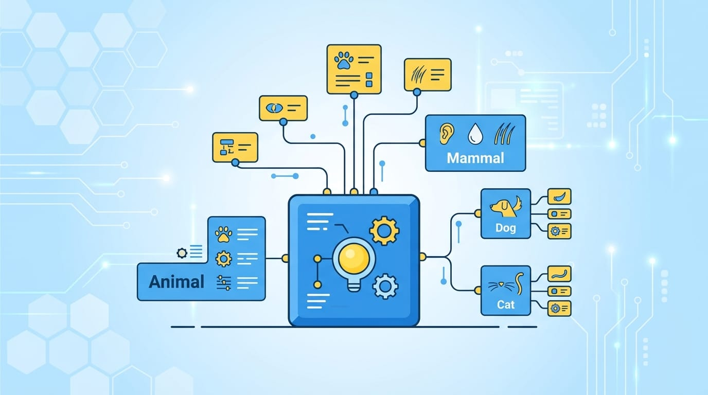
【Python 教學】繼承與特殊方法：讓類別更強大
2026-10-13
學會類別之後，這篇進入繼承（複用與擴充）與 Python 的特殊方法（dunder methods，如 __str__）：讓你的類別能被 print 得漂亮、能用運算子，寫出更 Python 風格的程式。
【Python 教學】類別與物件：用物件的方式組織程式
2026-10-13
這篇帶你認識 Python 的物件導向：用 class 定義類別、__init__ 建構式、屬性與方法、self 是什麼，從零學會「用物件思考」組織程式。
【Python 教學】資料結構：list、tuple、dict、set 一次搞懂
2026-10-13
Python 最常用的四種資料結構：list（清單）、tuple（元組）、dict（字典）、set（集合）。這篇帶你搞懂它們各自怎麼用、差在哪、什麼時候用哪個，還有好用的推導式。
【Python 教學】函式：把程式切成好用的小塊
2026-10-13
程式變長就該拆成函式。這篇帶你搞懂 Python 的函式：用 def 定義、參數與回傳值、預設參數，以及 *args / **kwargs 入門，讓程式有條理、可重用。
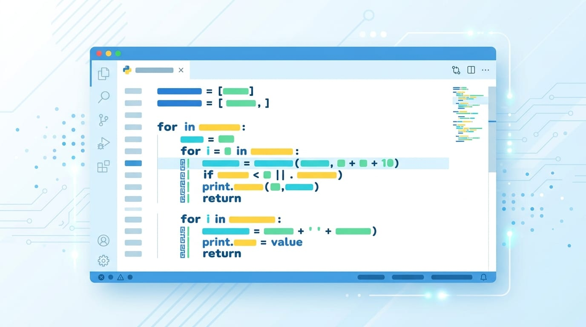
【Python 教學】語法基礎：變數、型別、流程控制與縮排規則
2026-10-13
環境裝好後，就從 Python 語法基礎開始動手寫。這篇帶你搞懂變數與型別、運算子、if/for/while 流程控制，以及 Python 最特別的「用縮排表示程式區塊」規則，打好地基。
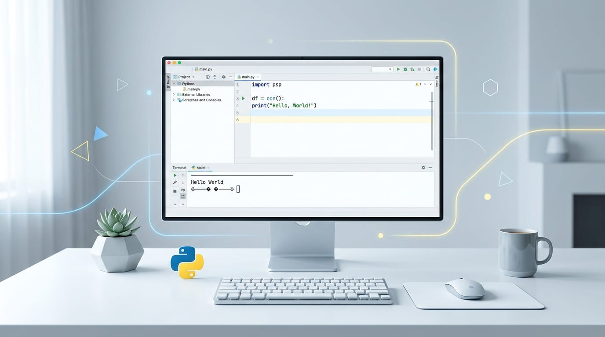
【Python 教學】開發環境準備：安裝 Python、VS Code，跑出第一支程式
2026-10-13
學 Python 的第一關是把環境裝好。這篇手把手帶你安裝 Python、設定 VS Code、認識 pip 套件安裝器，並跑出第一支程式，踏出 Python 開發扎實的第一步。
【Python 教學】Python 是什麼、能做什麼？從零開始的學習地圖
2026-10-13
想學程式、聽說 Python 最好上手？這篇一次講清楚 Python 是什麼、能做哪些事（自動化、爬蟲、資料分析、AI、後端）、要裝什麼工具，並給你一張從語法基礎到實戰的完整學習路徑，當作整個 Python 教學系列的入口。
【C# 教學】實戰專案：動手做一個主控台待辦清單 App
2026-10-12
學了這麼多，這篇把全部串起來：用 C# 從零做一個可以新增、檢視、完成、刪除、並能存檔讀檔的主控台待辦清單程式，實際體會類別、集合、LINQ、檔案與例外處理怎麼協作。
【C# 教學】檔案讀寫與 JSON：讓程式能存資料、讀資料
2026-10-12
程式關掉資料就不見？這篇帶你用 C# 做檔案讀寫，並認識怎麼把物件轉成 JSON 存檔、再讀回來，讓你的程式真正能記住東西，為實戰專案做準備。
【C# 教學】非同步 async/await：讓程式不卡頓
2026-10-12
下載檔案、呼叫 API 時程式會「卡住」等結果？這篇用白話帶你理解 C# 的非同步：為什麼需要 async/await、Task 是什麼、怎麼寫出不凍結、能同時做多件事的程式。
【C# 教學】集合與 LINQ：優雅地處理一堆資料
2026-10-12
實務上你常要處理「一堆資料」。這篇帶你認識 C# 常用集合 List、Dictionary，再學 LINQ：用接近自然語言的寫法做篩選、排序、投影與統計，讓資料處理又短又好讀。
【C# 教學】介面與泛型：寫出更有彈性、可重用的程式
2026-10-12
這篇帶你認識 C# 的介面（interface）與抽象類別：怎麼定義「一份契約」，以及泛型（generics）如何讓同一段程式適用多種型別，寫出又彈性又安全的程式碼。
【C# 教學】封裝、繼承、多型：物件導向的三大支柱
2026-10-12
學會類別之後，這篇進入物件導向的核心三支柱：封裝（藏好細節）、繼承（複用與擴充）、多型（同一介面不同行為）。用好懂的範例帶你理解它們解決了什麼問題。
【C# 教學】類別與物件：物件導向的第一步
2026-10-12
C# 是物件導向語言，而類別是它的核心。這篇帶你從零認識類別與物件：欄位、屬性、方法、建構式，以及 new 一個物件到底發生了什麼事，為後面的封裝繼承多型打底。
【C# 教學】方法與例外處理：把程式切成好用的小塊，並優雅地處理錯誤
2026-10-11
程式變長就該拆成方法。這篇帶你搞懂 C# 的方法：參數、回傳值、多載與預設參數，再學會用 try/catch/finally 處理例外，讓程式遇到錯誤也不會整個崩掉。
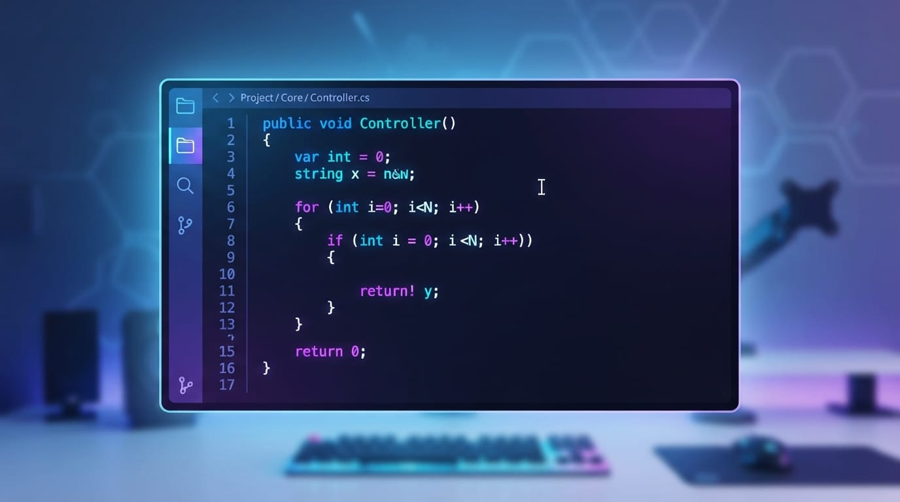
【C# 教學】語法基礎：變數、型別、運算子與流程控制
2026-10-11
環境裝好後，就從 C# 語法基礎開始動手寫。這篇用實際範例帶你搞懂變數與常數、常見資料型別、運算子，以及 if、switch、for、while 等流程控制，打好寫 C# 的地基。
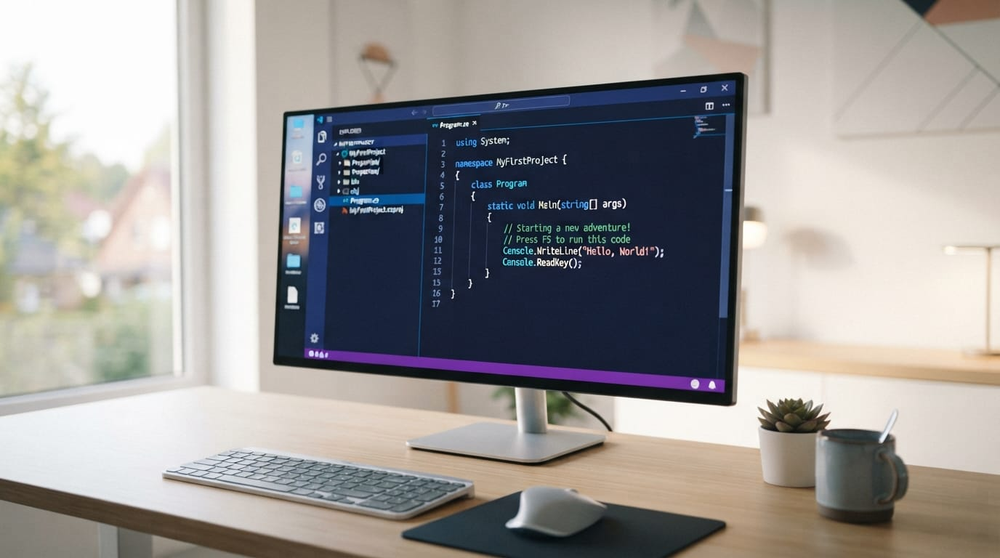
【C# 教學】開發環境準備：安裝 .NET SDK 與 Visual Studio，跑出第一支程式
2026-10-11
學 C# 的第一關是把環境裝好。這篇手把手帶你安裝 .NET SDK、選擇 Visual Studio 或 VS Code、建立第一個主控台專案，並跑出經典的 Hello World，踏出 C# 開發扎實的第一步。
【C# 教學】C# 是什麼、能做什麼？從零開始的學習地圖
2026-10-10
想學 C# 卻不知道從何下手？這篇一次講清楚 C# 是什麼、能做哪些東西（桌面、Web、遊戲、後端）、要裝什麼工具，並給你一張從語法基礎到實戰專案的完整學習路徑，當作整個 C# 教學系列的入口。
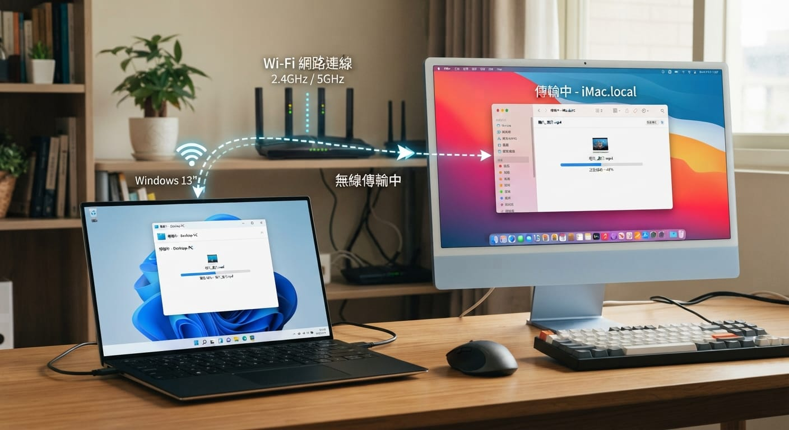
Windows 跟 iMac 和 Windows 跟 Windows 怎麼互傳檔案？區網共享一次搞懂
2026-10-09
家裡同時有 Windows 和 iMac，或兩台 Windows 想互傳檔案，不用再靠隨身碟或 LINE。這篇手把手教你用區域網路做檔案共享：Windows 開共享、Mac 連 Windows、Windows 連 Mac，常見連不上的問題也一次解。
Mac 用 OpenVanilla 裝嘸蝦米輸入法：從安裝到匯入碼表完整教學
2026-10-09
從 Windows 換到 Mac，最不習慣的往往是嘸蝦米輸入法沒得用。這篇教你用免費開源的 OpenVanilla 在 macOS 上跑嘸蝦米：下載安裝、加進輸入法清單、匯入碼表、設定快速鍵，常見的裝了看不到、打不出字也一次解。
自由廣場散步：中正紀念堂、衛兵交接與周邊順遊
2026-10-08
台北自由廣場怎麼逛？帶你看中正紀念堂的白牆藍瓦、整點衛兵交接、國家兩廳院，順道走訪一旁的景福門、長榮海事博物館與國家圖書館。交通、開放時間、散步動線一次說清楚。
側開秒穿一件式雨衣：下雨天不再手忙腳亂，快速穿脫又時尚
2026-10-08
傳統雨衣難穿、袖子卡卡、還沒穿好就淋濕？這篇聊側開設計的一件式雨衣：從側邊拉開秒套上、快速穿脫，版型俐落不像塑膠袋，通勤騎車、追劇排隊都好用。
iPhone 磁吸支架手機殼實用嗎？360 度旋轉＋防摔一殼搞定
2026-10-06
追劇要找東西墊手機、視訊得一直用手扶？這篇聊 MagSafe 磁吸殼怎麼挑，分享一款 360 度旋轉支架防摔殼：免手扶、角度自由、還兼顧防摔，iPhone 11 到 18 都適用。
【投資理財修煉·高手篇】AI 投資工具應用：用工具提升分析效率
2026-09-27
資訊爆炸的時代，投資的關鍵不只是知識，還有效率。這篇談 AI 與自動化工具如何幫你整理資料、加速分析，以及我自己開發的股票投資分析系統怎麼把這些整合在一起。
【投資理財修煉·高手篇】全球市場視野：資產不要只放一個籃子
2026-09-27
只投資單一國家市場，等於把身家壓在一個經濟體上。這篇談為什麼要有全球視野、如何用簡單的方式做到跨市場分散，以及全球配置要注意的重點。
【投資理財修煉·高手篇】被動收入策略：讓錢幫你工作
2026-09-27
財務自由的關鍵，是建立能持續產生現金流的資產。這篇談被動收入的觀念、常見的來源，以及怎麼一步步打造屬於你的現金流系統。
【App 開發指南】一套程式碼兩邊跑？Flutter、React Native、KMP 跨平台方案怎麼選
2026-09-27
學原生要學兩套，有沒有『寫一次、iOS 和 Android 都能跑』的方法？這篇比較三大跨平台方案 Flutter、React Native、Kotlin Multiplatform 的特色、優缺點與適合對象，幫你判斷該不該走跨平台，以及怎麼選。
【投資理財修煉·進階篇】籌碼面與財務面：法人動向與財報三表
2026-09-26
進階篇的最後一塊拼圖：籌碼面看誰在買賣、法人動向透露什麼訊息；財務面讀懂財報三表，讓你對一家公司的財務健康有更完整的判斷。
【App 開發指南】Android App 怎麼賺錢？內購、訂閱、AdMob 廣告與定價
2026-09-26
App 上架 Google Play 後怎麼變現？這篇整理 Android App 主要賺錢方式——內購、訂閱、AdMob 廣告、付費下載，說明各自機制、Google 抽成、適合情境，並給實際定價與選擇建議。Android 路徑完結篇。
【投資理財修煉·進階篇】技術面分析：看懂 K 線、均線與常見指標
2026-09-25
技術面分析不看公司好不好，而是讀市場的情緒與趨勢。這篇介紹 K 線、均線、RSI、MACD 等常見工具，幫你建立用圖表輔助判斷買賣時機的基本功。
【App 開發指南】完整上架 Google Play：帳號、封閉測試到送審全流程
2026-09-25
Android App 做好了，怎麼放上 Google Play？這篇帶你走完整上架流程：註冊開發者帳號、打包 AAB、在 Play Console 建立 App，並特別說明新手最容易卡關的『12 位測試者、14 天封閉測試』規則。
【投資理財修煉·進階篇】基本面分析：怎麼看一家公司值不值得投資
2026-09-24
選股不是靠感覺，而是看懂一家公司的基本面。這篇介紹基本面分析的核心概念：商業模式、獲利能力、成長性與評價，幫你建立判斷一家公司是否值得投資的思考框架。
【App 開發指南】讓 Android App 記住資料、連上網路：DataStore、Room 與 API
2026-09-24
會做畫面之後，這篇讓你的 Android App 真正實用起來：用 DataStore 存小設定、用 Room 存結構化資料、用 Retrofit 串接網路 API，把靜態畫面變成會記憶、會連線的實用工具。
【投資理財修煉·進階篇】槓桿工具：權證與期貨的風險與機會
2026-09-23
權證、期貨聽起來很厲害，但它們是這個系列裡風險最高的工具。這篇不是要你去玩，而是幫你搞懂它們的運作方式、潛在風險，以及什麼樣的人才適合碰。
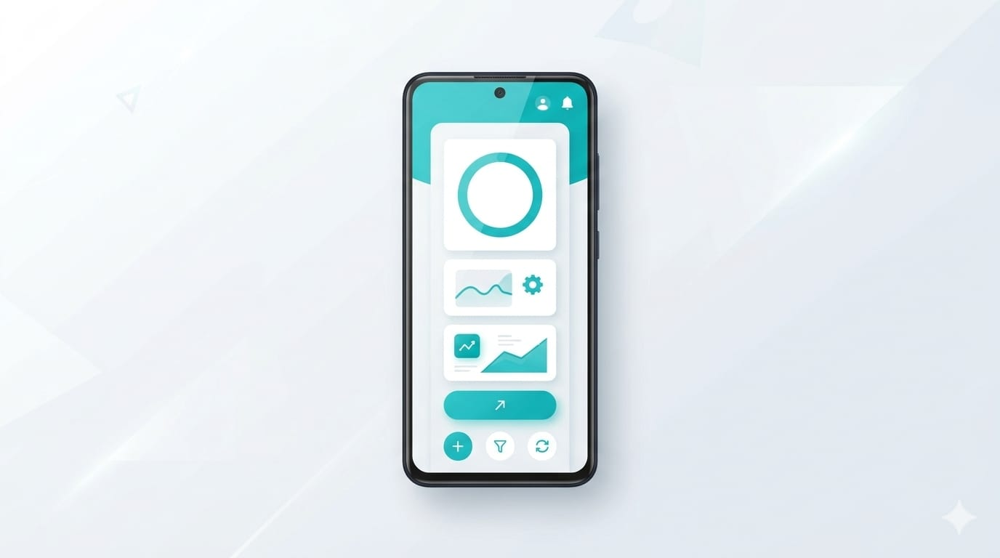
【App 開發指南】用 Jetpack Compose 做第一個 Android App：畫面、狀態與互動
2026-09-23
學完 Kotlin 基礎，這篇用 Jetpack Compose 動手做出第一個看得到、點得到的 Android App。從 Composable、常用元件、版面排列，到用 remember 與 state 做出會反應的互動，把畫面變活的。
【投資理財修煉·進階篇】債券入門：為什麼投資組合需要它
2026-09-22
債券常被忽略，但它其實是投資組合裡的穩定器。這篇用白話介紹債券是什麼、怎麼賺錢、有哪些種類，以及為什麼股債搭配能讓你的資產走得更穩、更遠。
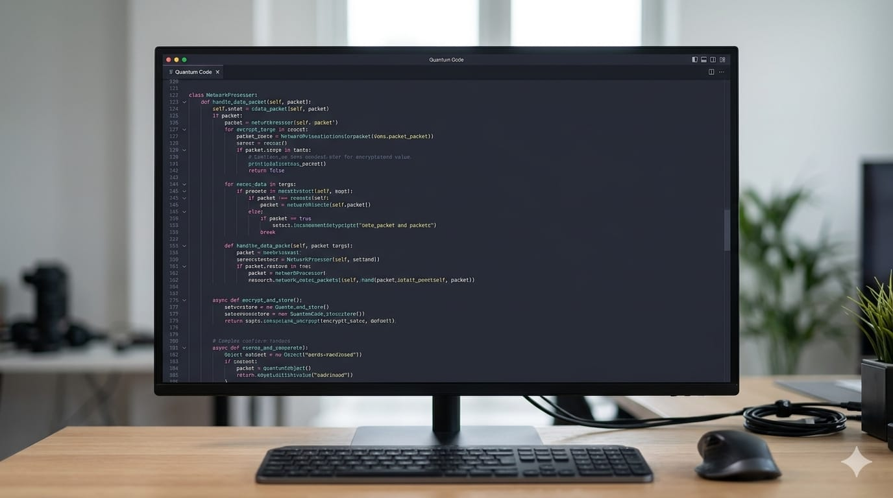
【App 開發指南】Kotlin 語言基礎：變數、型別、流程控制、函式與 null 安全
2026-09-22
環境裝好後，就從 Kotlin 語言基礎開始動手寫。這篇用實際範例帶你搞懂變數與常數、資料型別、if 與迴圈、函式，以及 Kotlin 的 null 安全機制，打好 Android 開發的地基。學過 Swift 會特別有感。
【App 開發指南】Android 開發第一步：Android Studio、SDK、模擬器完整準備
2026-09-21
想學 Android App 開發？好消息是任何電腦都能開始。這篇帶你安裝 Android Studio、認識 SDK 與模擬器、準備 Google 帳號，並認識 Kotlin 與 Jetpack Compose，踏出 Android 開發扎實的第一步。
【App 開發指南】iOS App 怎麼賺錢？內購、訂閱、廣告與定價策略
2026-09-20
App 上架後，怎麼把它變成收入？這篇整理 iOS App 主要的變現方式——內購、訂閱、廣告、付費下載，說明各自的機制、抽成、適合的情境，並給實際的定價與選擇建議。
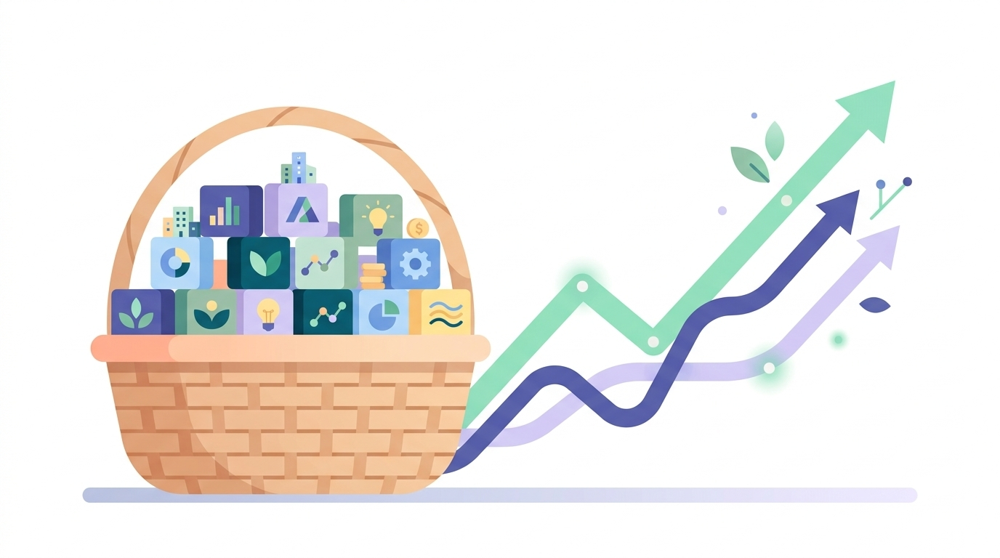
【投資理財修煉·進階篇】ETF 深入：怎麼挑、怎麼配
2026-09-20
ETF 是最適合新手的投資工具，但市面上百百種怎麼選？這篇深入談 ETF 的類型、挑選要看的重點（費用、規模、追蹤指數），以及怎麼用 ETF 建立一個簡單又穩健的投資組合。
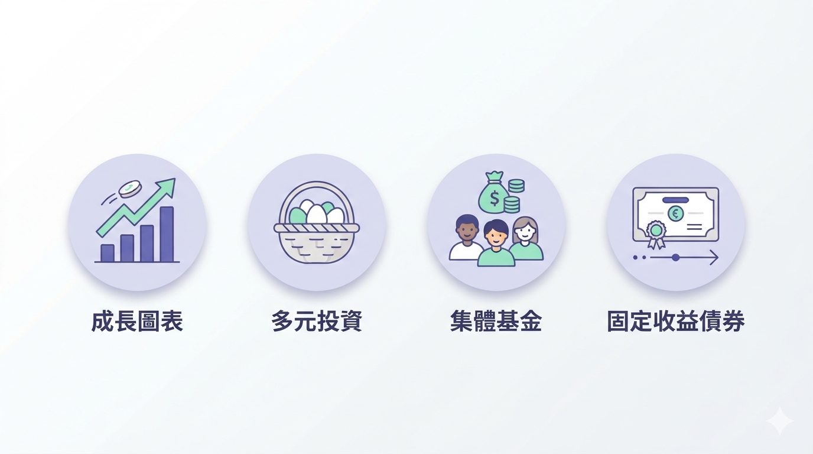
【投資理財修煉·進階篇】認識投資工具：股票、ETF、基金、債券全景
2026-09-20
股票、ETF、基金、債券到底差在哪？這篇用白話帶你認識四種最常見的投資工具：各自怎麼運作、風險報酬如何、適合什麼樣的人，幫你在開始投資前先看懂全景。
【App 開發指南】完整上架 App Store：帳號、送審到常見退件全流程
2026-09-19
App 做好了，怎麼放上 App Store？這篇帶你走完整上架流程：加入開發者帳號、在 App Store Connect 建立 App、準備隱私與素材、用 Xcode 上傳送審，並整理最常見的退件原因與避開方法。
【投資理財修煉·入門篇】投資心態：長期 vs 短期、耐心 vs 貪婪
2026-09-19
投資最難的往往不是技術，而是心態。這篇談長期思維與短線衝動的差別、恐懼與貪婪如何影響決策，以及怎麼建立能讓你走得久的投資心理素質。
【投資理財修煉·入門篇】讀《富爸爸窮爸爸》：改變我金錢觀的一本書
2026-09-19
《富爸爸窮爸爸》是很多人理財路上的啟蒙書。這篇分享我的讀後心得與啟發：資產與負債的真正差別、為什麼要讓錢為你工作，以及它如何改變我看待金錢的方式。
【App 開發指南】讓 App 記住資料、連上網路：UserDefaults 與 API 串接
2026-09-18
會做畫面之後，這篇讓你的 App 真正實用起來：用 UserDefaults 儲存小資料、認識 Codable 處理 JSON、用 URLSession 從網路 API 抓資料，把靜態畫面變成會記憶、會連線的實用工具。
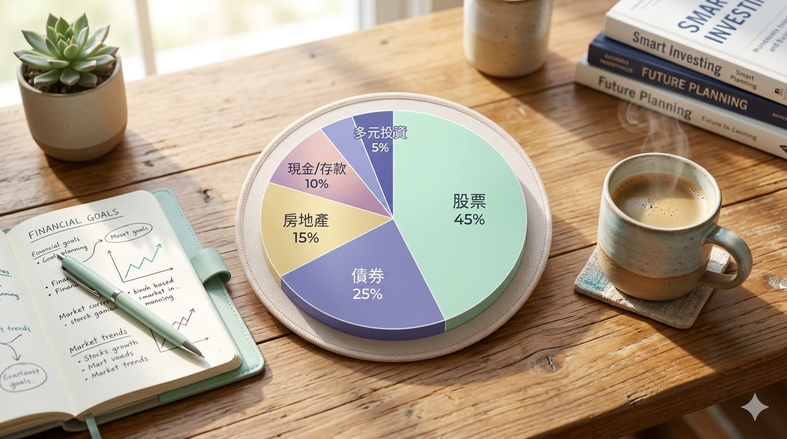
【投資理財修煉·入門篇】理財基本概念：資產配置與風險管理
2026-09-18
投資的第一步不是選股，而是搞懂資產配置與風險管理。這篇用最白話的方式，帶你建立投資的地基：錢該怎麼分、風險怎麼控，讓你走得穩又走得遠。
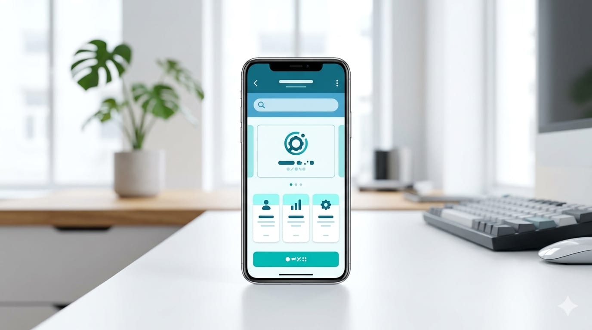
🎬【App 開發指南】用 SwiftUI 做第一個 App：畫面、狀態與互動
2026-09-17
學完 Swift 基礎，這篇帶你用 SwiftUI 動手做出第一個看得到、點得到的 App。從 View、常用元件、版面排列，到用 @State 做出會反應的互動，一步步把畫面變活的。
【投資理財修煉·入門篇】理財第一步：先搞懂錢跑去哪了
2026-09-17
想開始理財卻不知從何下手？別急著投資，先從記帳搞懂自己的收支開始。本文用最白話的方式，帶你踏出理財的第一步。
待辦事項總是做不完？用任務管理把生活理清楚
2026-09-17
腦袋裡塞滿待辦、事情老是漏東漏西？別再靠記憶硬撐。這篇分享一套簡單的任務管理方法，把生活瑣事全部倒出來、分好類、逐一完成，讓你過得更輕鬆。
仙台 3 天 2 夜：銀山溫泉、松島、環市巴士一次玩透
2026-09-17
第一次玩仙台怎麼排？三天兩夜路線一次給你：Day1 走進大正浪漫的銀山溫泉，Day2 遊日本三景松島，Day3 用 Loople 環市巴士輕鬆逛市區。含交通、時間與省錢小撇步。
【App 開發指南】Swift 語言基礎：變數、型別、流程控制、函式與可選型別
2026-09-16
環境裝好後，就從 Swift 語言基礎開始動手寫。這篇用實際範例帶你搞懂變數與常數、資料型別、if 與迴圈、函式，以及 Swift 最有特色的『可選型別』，打好 iOS 開發的地基。
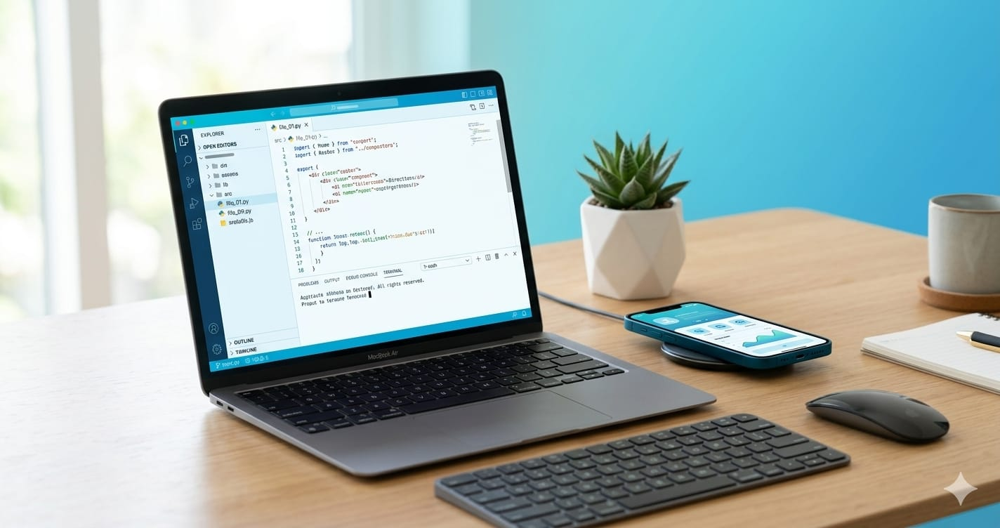
🎬【App 開發指南】iOS 開發第一步：Mac、Xcode、Apple ID 環境完整準備
2026-09-15
想學 iPhone App 開發，第一關就是把開發環境準備好。這篇帶你搞懂為什麼需要 Mac、如何安裝 Xcode、註冊 Apple ID 與開發者帳號，並認識 Swift 與 SwiftUI，讓你踏出扎實的第一步。
【App 開發指南】iPhone 與 Android 開發完整地圖：工具、流程、上架、費用、賺錢一次看懂
2026-09-14
想做 App 卻不知道從何開始？這篇一次講清楚 iOS 與 Android 的開發工具、開發流程、上架商店、實際費用與賺錢方式，並給你一張『該先學哪個平台』的決策建議，當作整個學習系列的入口地圖。